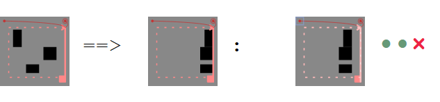

Clip_8 is an iconic programming language inspired by paper manipulation operations. While each operation applies to graphical content, the instructions, in turn, are themselves given in a graphical form.
The following reference test sheets serve as language introduction and language reference. At the same time they are integration tests for the clip_8 interpreter.

The first box shows the precondition, before the instruction.
The second box the desired result or postcondition.
The third box after the colon is the test itself.
The interpreter will try to execute the contained program in the third box. What you will see is the actual result after the (successful?) execution. If you have slow hardware you might see the execution process: Some rectangle might be jumping or changing size, when reloading the test sheet.
For each reference test there are three checks to be done. Each result is indicated by a green dot or a red cross, after the graphical reference test areas.
The first test is a selftest: it checks whether precondition and test area match before the execution.
The second test checks success of execution: It will fail on runtime errors or infinite execution.
The third test checks whether test and postcondition match after execution.
Not all browsers currently support all technological ingredients. See project documentation at github for details.